Scene 1 · Bathroom stalls
The stall dividers, doors, and floor tiles appear in both views.
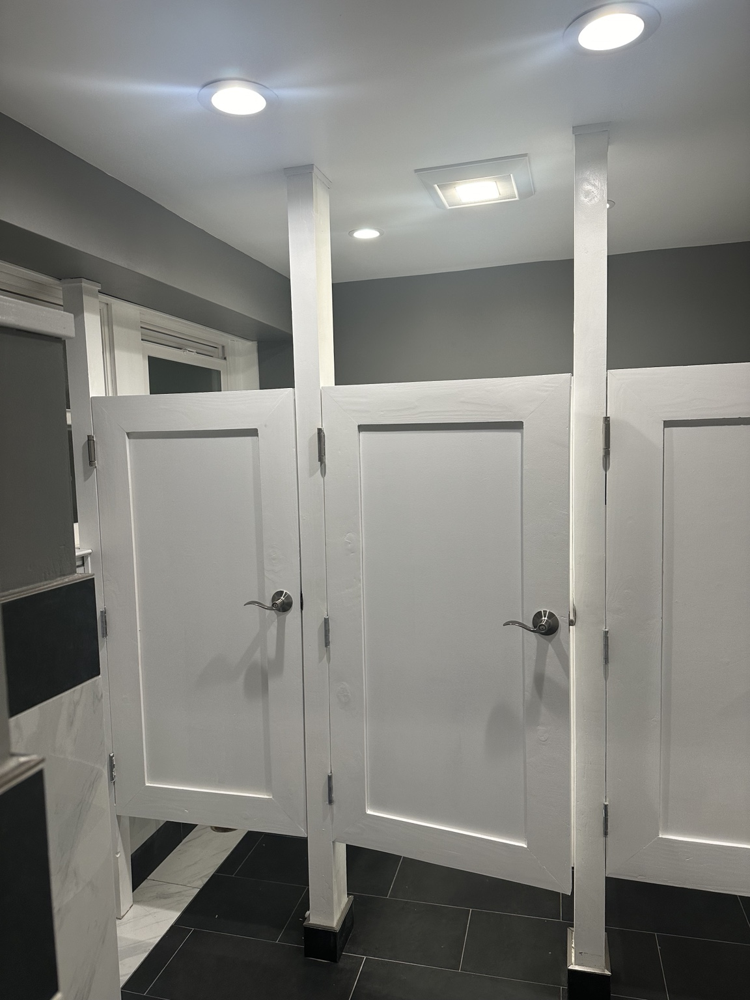
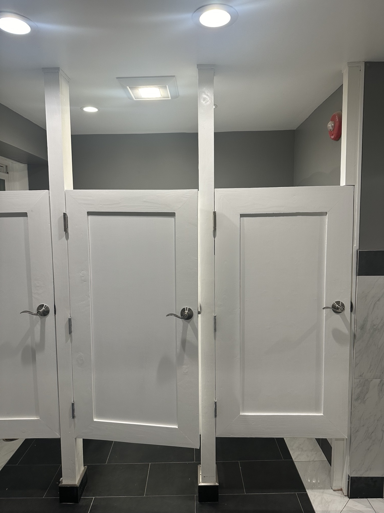
This project uses manually matched image points to estimate homographies, warp photographs, rectify planar objects, and combine overlapping views into mosaics.
I photographed three different scenes in overlapping pairs. Each pair was taken from the same spot. I rotated the camera slightly to the left and then slightly to the right without changing the center of projection.
Keeping the camera position fixed while rotating it gives the two views a similar center of projection. Their shared scene details provide corresponding points for alignment.
The stall dividers, doors, and floor tiles appear in both views.


The framed poster, wall, and doorway provide shared details across the pair.
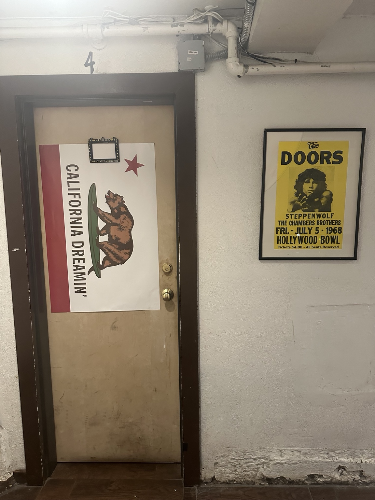
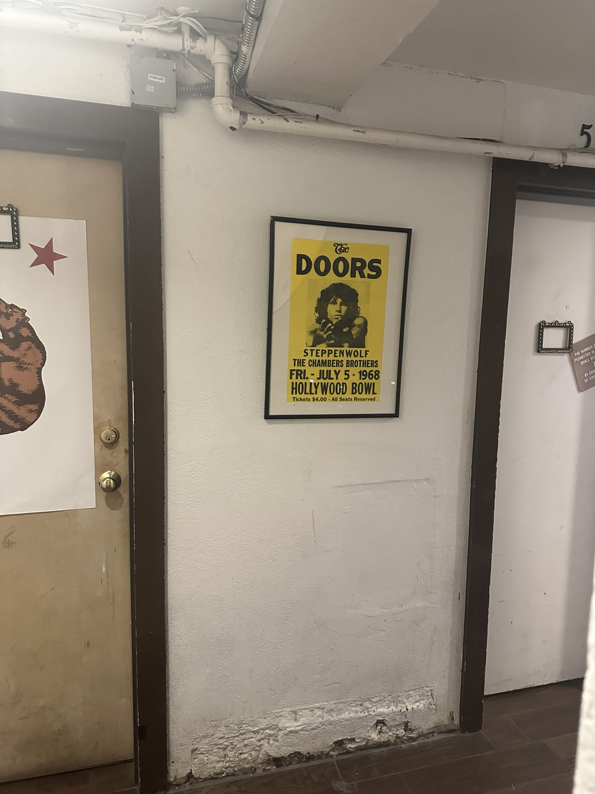
The fire alarm, wall fixtures, and doors are visible in both views.
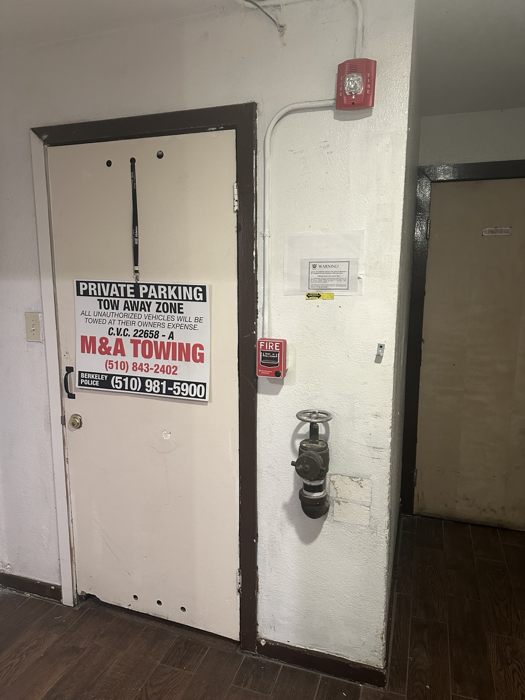
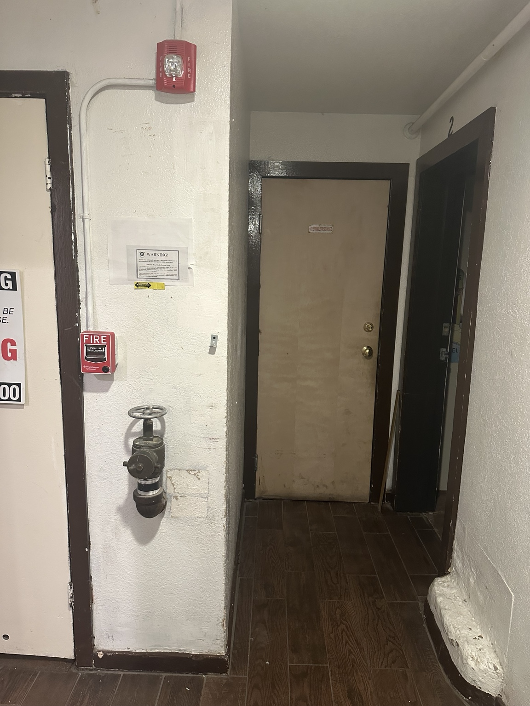
I selected 29 point correspondences between the two poster photographs using the CS180 correspondence tool. The figure overlays the photos with colored lines connecting matching scene features.
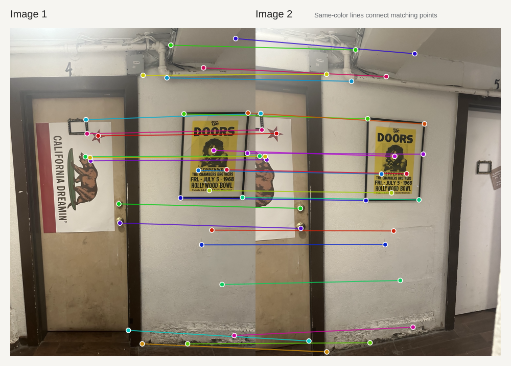
A homography maps a point (x₁, y₁) in Image 1 to its match (x₂, y₂) in Image 2:
Fixing the bottom-right entry to 1 leaves eight unknowns. Each correspondence contributes two rows to the linear system A h = b:
Using all 29 correspondences, computing H gives this homography from Image 1 to Image 2:
Mean reprojection error: 4.63 pixels. Maximum reprojection error: 22.34 pixels.
The Star Wars poster has four obvious corners. I selected these corners in top-left, top-right, bottom-right, and bottom-left order and mapped them to an 800 by 1200 pixel rectangle. I then transformed the image corners to determine the output canvas area. From there, I iterated through the pixels in this canvas and multiplied each pixel's homogeneous coordinates by the inverse homography to find its source location. For nearest-neighbor sampling, I rounded the source coordinates to select the nearest pixel. I also used bilinear warping, where I kept the decimal source coordinates and calculated a weighted average of the four surrounding pixels based on their horizontal and vertical distances.
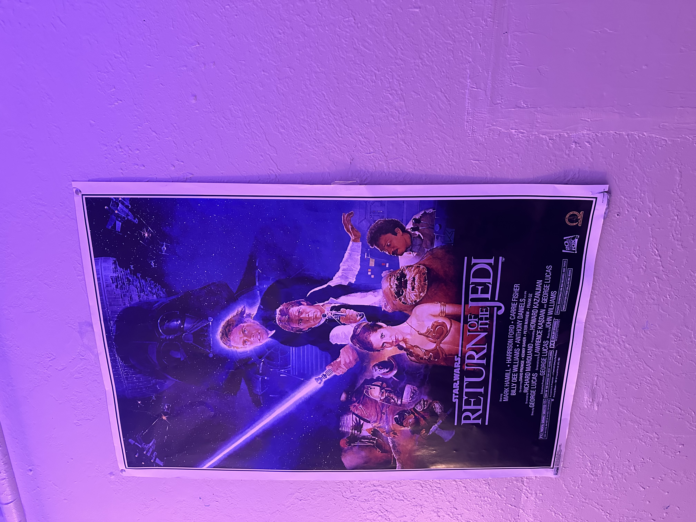
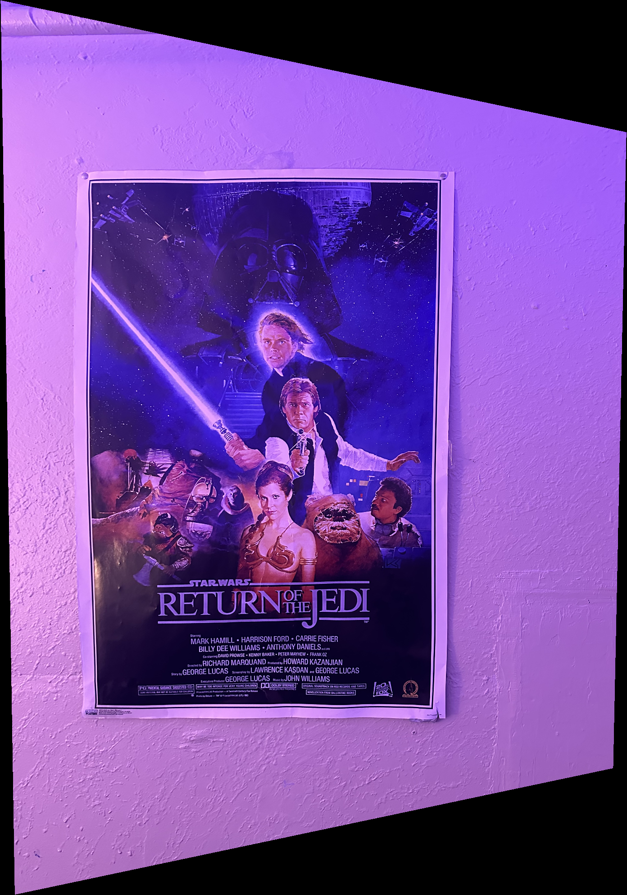
I selected the outer corners of the hanging poster and mapped them to an 800 by 1280 pixel rectangle.
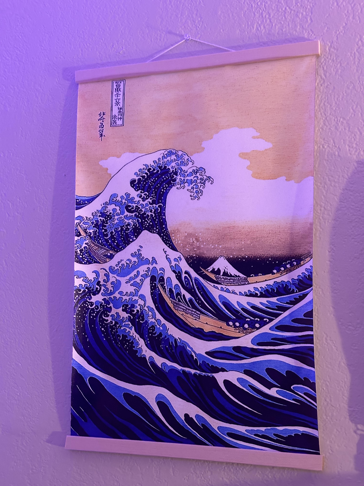
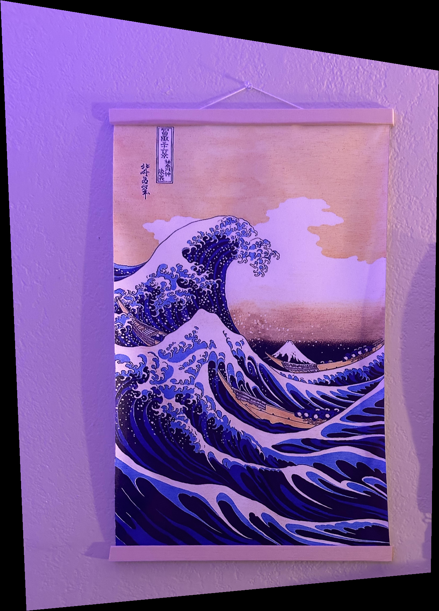
I treat integer coordinates as pixel centers, with (0, 0) at the center of the top-left pixel. The canvas bounds come from the transformed image corners. Output locations that map outside the source image remain black. The target rectangles specify the poster regions; the complete output canvases also include the warped surroundings.
Both methods gave me the same rectified geometry, and at this size, the results look almost identical. Nearest-neighbor sampling takes the color of a single source pixel, which keeps the original pixel values but can make edges look jagged. Bilinear sampling blends nearby pixels, making text and edges look smoother but sometimes slightly blurry. Neither method can fix the curves already present in the physical paper.
| Image | Nearest neighbor | Bilinear |
|---|---|---|
| Star Wars | 10.90 seconds | 23.72 seconds |
| Wave print | 8.60 seconds | 19.50 seconds |
In my loop-based implementation, bilinear sampling took about twice as long as nearest neighbor. This makes sense because bilinear interpolation combines four source pixel colors for each output pixel, while nearest neighbor only needs one. The exact timings also depend on the image size and the computer running the code.
Both warpImageNearestNeighbor and warpImageBilinear are implemented in proj4a.py. Running the file generates all four rectifications and prints the time taken by each warp.
Simply placing one warped image on top of another can leave a visible seam, especially when the lighting or alignment is slightly different. To make the transition smoother, I use feather blending. Each image gets a weight of 1 at its center, which gradually decreases to 0 toward its edges. This lets the images blend together instead of creating a sharp boundary.
I keep Image 1 fixed and warp Image 2 into its coordinate system. I calculate the canvas size using the corners of both images and use bilinear interpolation when warping. In areas where the images overlap, I combine their colors using a weighted average:
If only one image covers a pixel, it keeps that image's color. Pixels outside both images stay black. I calculate the feather weights in each image's original coordinates and use a very small positive weight at valid edge pixels.
I also reuse warpImageBilinear to get the warped image, feather weights, and canvas position. Then makeMosaic combines everything onto one canvas. Feather blending helps hide seams, but it doesn't fix alignment errors, parallax, or perspective stretching.
For this mosaic, I manually selected 16 matching point pairs between the two bathroom photos. The doors line up fairly well, although there's still some ghosting around the ceiling fixtures and upper supports.
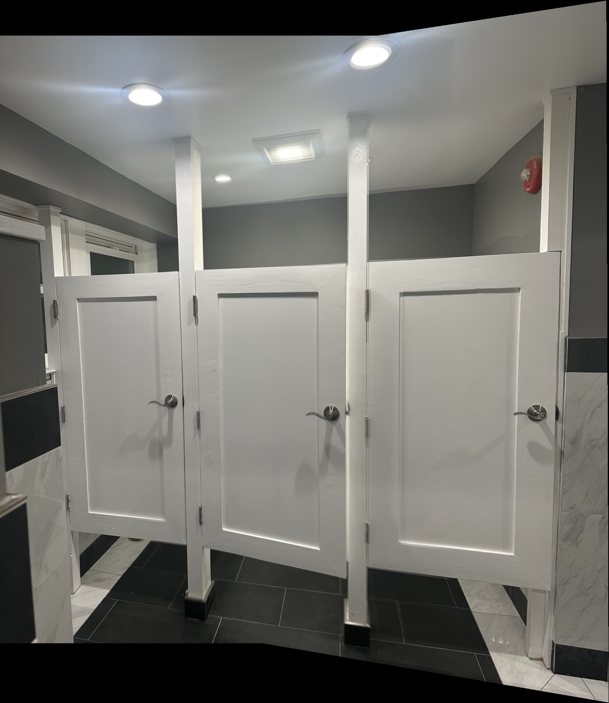
I used 29 manually selected correspondences to create this mosaic. After warping the images with bilinear interpolation, I combined them using normalized feather weights. The black areas are regions where neither photo provides any image data.
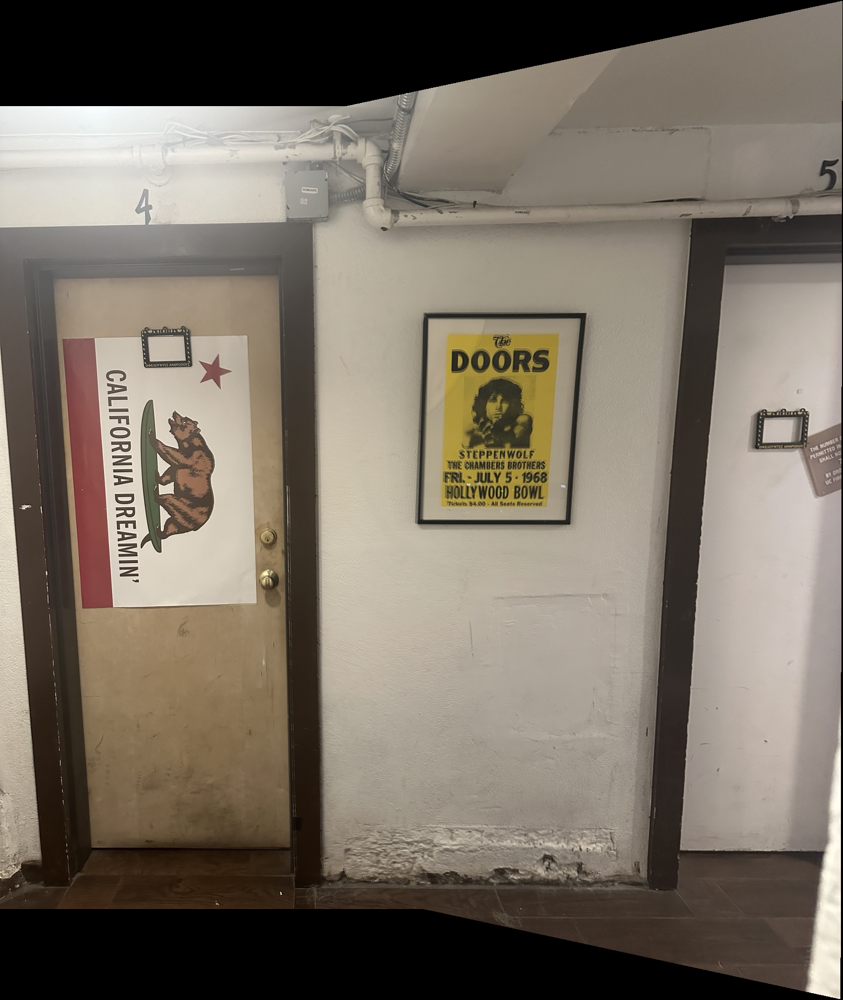
For the final mosaic, I used seven cleaned matching point pairs. I also removed four leftover Star Wars point pairs from the exported correspondences.
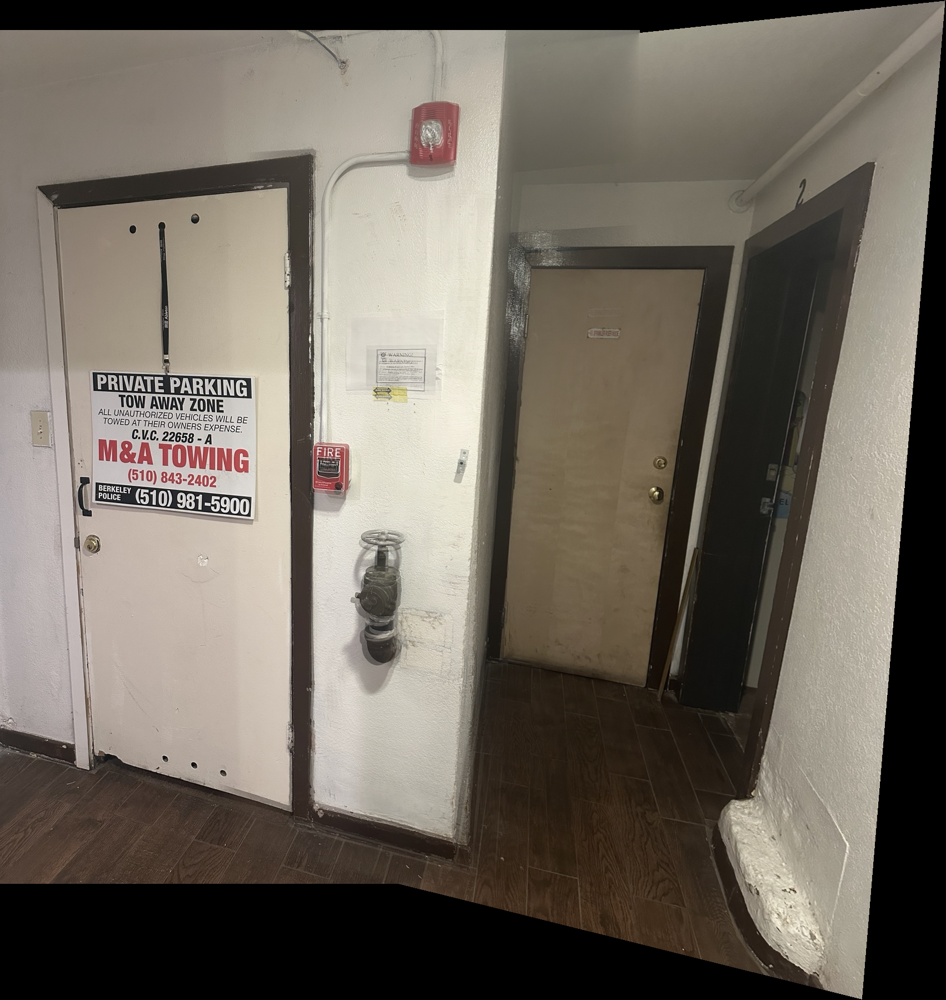
This mosaic turned out a little worse than the other two. There are noticeable double edges around the warning sign, pipe, and door frame, even after feather blending. This is likely because some of my point matches weren't perfectly accurate, along with possible parallax from objects being at different depths. Better point matches could help, but a single homography can't perfectly align everything if the camera moved between the two shots.
In proj4a.py, my makeMosaic function reuses warpImageBilinear and the featherWeight helper. For each scene, I load the two images and their saved point correspondences, calculate the homography, warp the images, and save the final blended mosaic.